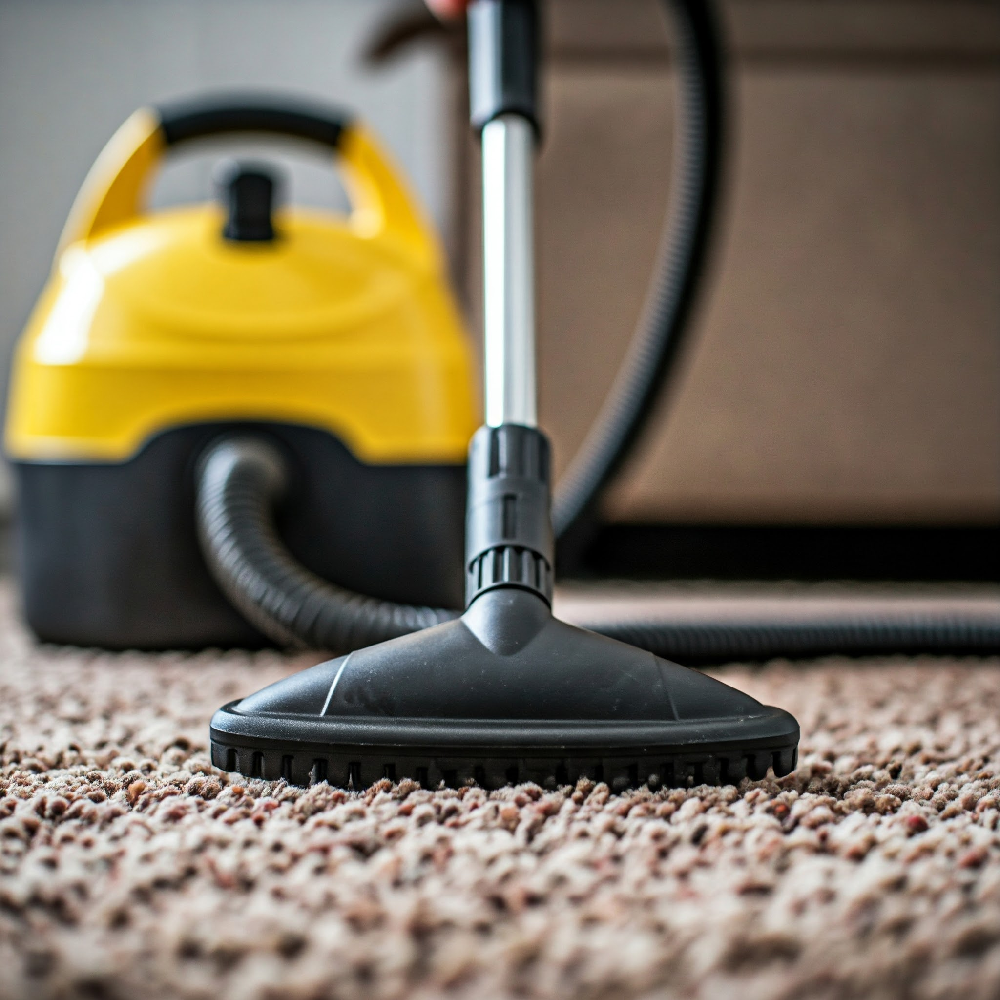
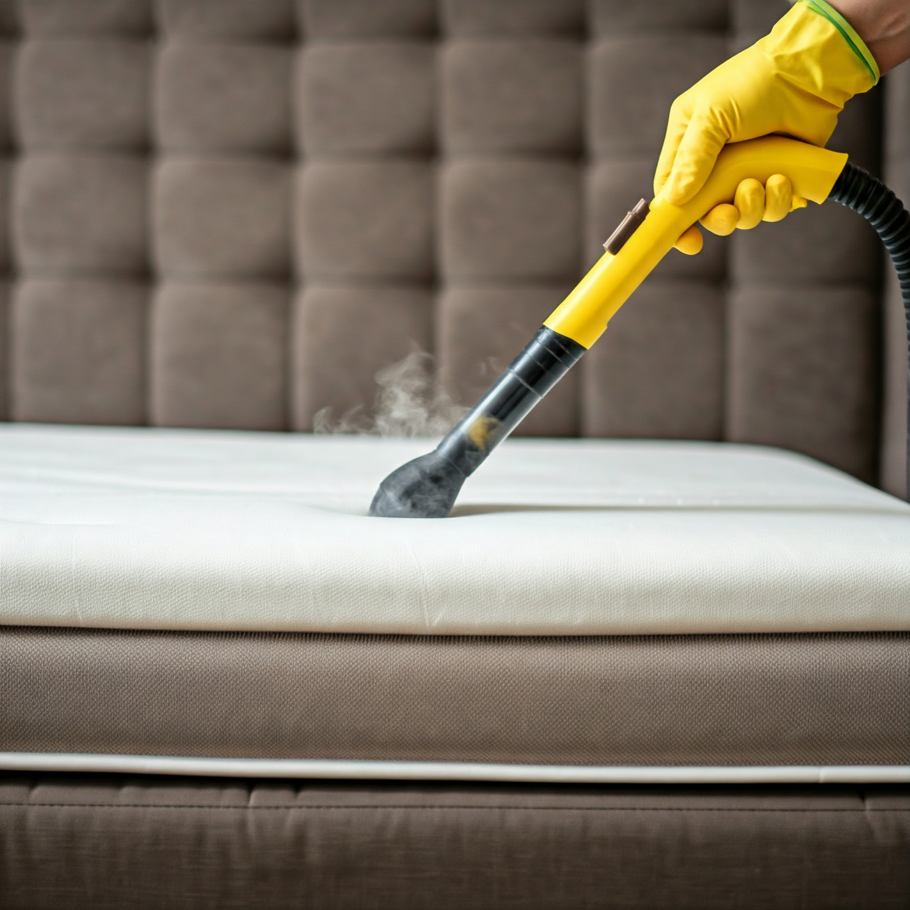
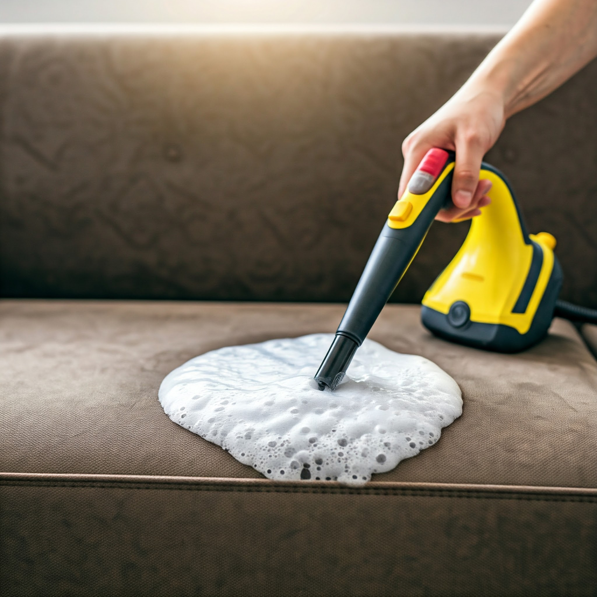
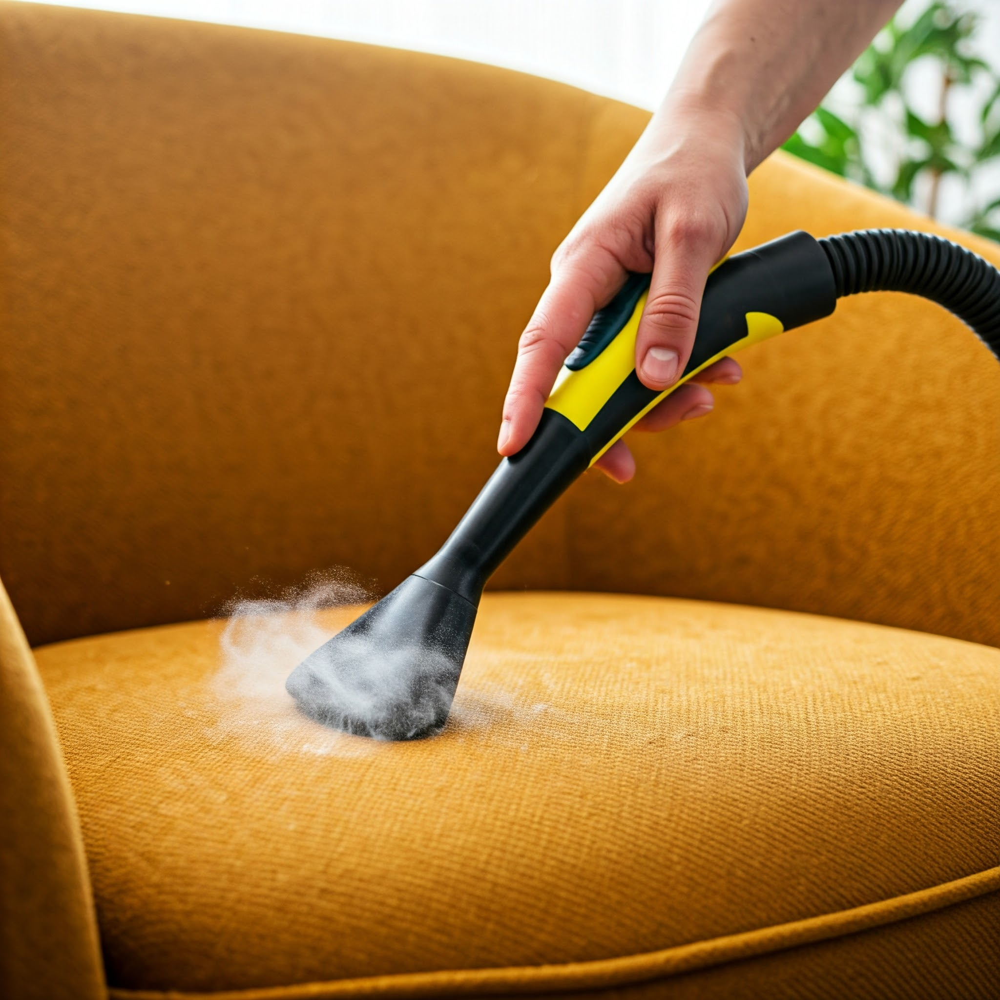

Naše služby

Čistenie kobercov
Odstránime škvrny a obnovíme farby vašich kobercov.

Čistenie matracov
Zaistíme hygienickú čistotu pre váš lepší spánok.

Čistenie sedačiek
Obnovíme krásu a pohodlie vášho čalúneného nábytku.

Čistenie kresiel
Vaše kreslá budú opäť ako nové.
O nás
Sme odborníci na čistenie s bohatými skúsenosťami. Používame moderné technológie a ekologické prípravky, aby sme zaručili dokonalý výsledok a vašu spokojnosť.
Email: info@cisteniekobercov.sk
Telefón: +421 123 456 789
Adresa: Hlavná 123, Bratislava
Cenník
Tepovanie kobercov
Koberec do 10 m²: 50 €
Koberec 10-20 m²: 80 €
Koberec väčšieho rozmeru dohodou.
Tepovanie čalúneného nábytku
2-miestna sedačka: 40 €
3-miestna sedačka: 50 €
Rohová sedačka: 60-80 € (podľa veľkosti)
Kreslo: 25 €
Taburet: 15 €
Matrac: 20-30 € (podľa veľkosti, množstevná zľava dohodou.)
Účtovaná doprava
8 € (v rámci Bratislavy), nad rámec Bratislavy 1 € / km
Doplňujúce informácie
Minimálna objednávka: 30 €
Zľavy: Pri objednávke viacerých služieb a pre stálych zákazníkov
Expresné služby: +20 % k cene služby
Príklad kalkulácie
Tepovanie 3-miestnej sedačky a koberca 15 m²: 50 € (koberec) + 50 € (sedačka) + 8 € (doprava) = 108 €
Uvedené ceny sú orientačné a uvedené vrátane DPH.